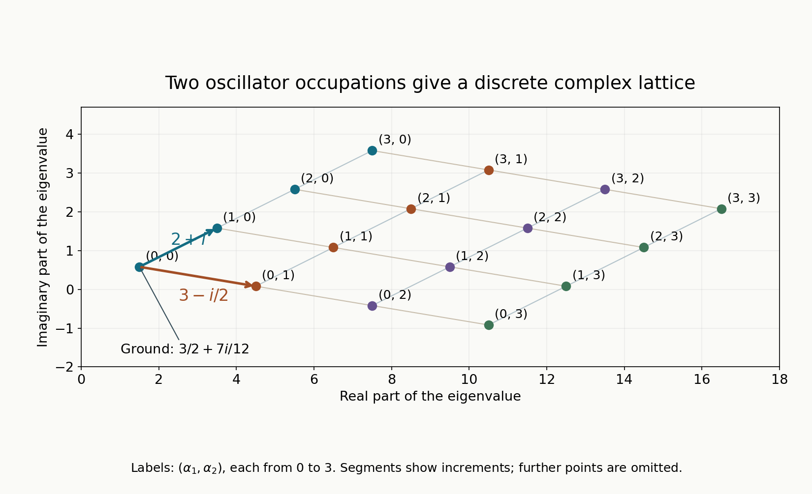

The spectrum of a complex quadratic polynomial
A complex oscillator can have nonorthogonal eigenvectors and nontrivial Jordan blocks. Its eigenvalues nevertheless come from a finite-dimensional Hamilton matrix. Affine terms move the Gaussian ground state and add the value at a complex critical point. They cannot in general be removed by a unitary translation.
We use the exact Weyl product and Schwartz action from Two measuring scales, one Weyl product and From Weyl symbols to operators and changes of coordinates, and the boundedness and compactness criteria from When a moving symbol scale controls an operator. Finite defects under perturbation supplies the two-sided compact-parametrix theorem. The bounded inverse theorem is in Banach estimates, quotient spaces and compact parameter arguments. We prove the global domain estimates, positive complex plane, affine Gaussian conjugation and complete spectral calculation here.
Basic references are Sjöstrand's original multiple-characteristic paper [S], Pravda-Starov's open discussion of elliptic quadratic spectra and resolvents [P], and Lerner's phase-space analysis [L]. The polynomial Gaussian method is due to Sjöstrand. Our proof uses a finite-dimensional expanding flow to construct its positive plane, then finite polynomial spaces to identify the spectrum. Throughout, \(D=-i\partial\), and \[ \omega((x,\xi),(y,\eta))=\xi\cdot y-x\cdot\eta. \tag{1.1} \]
1. The spectral statement and the operator domain
Let \[ Q(z)=z^THz+\ell^Tz+d, \qquad z=(x,\xi)\in\mathbb R^{2n}, \qquad H=H^T\in M_{2n}(\mathbb C), \tag{1.2} \] and assume the real symmetric matrix \(R=\operatorname{Re}H\) is positive definite. Extend this polynomial complex linearly to \(\mathbb C^{2n}\). Put \[ J=\begin{pmatrix}0&-I\\I&0\end{pmatrix},\qquad F=-JH,\qquad A=F/i. \tag{1.3} \] Thus \(\omega(u,Fv)=u^THv\). The eigenvalues of \(A\) avoid the imaginary axis. Let \(\mu_1,\ldots,\mu_n\) be its eigenvalues with positive real part, counted with algebraic multiplicity. We prove these assertions in Section 3; diagonalizability is not assumed.
The matrix \(H\) is invertible. Indeed, for a complex vector \(v\), \(\operatorname{Re}(v^*Hv)=v^*Rv>0\) unless \(v=0\). Define \[ z_*=-\tfrac12H^{-1}\ell, \qquad c=Q(z_*)=d-\tfrac14\ell^TH^{-1}\ell. \tag{1.4} \] This is the unique complex critical point and its value. Our domain is \[ \mathcal B_2= \{u\in L^2(\mathbb R^n):x^\alpha D^\beta u\in L^2, \ |\alpha|+|\beta|\leq2\}, \quad \|u\|_{\mathcal B_2}^2= \sum_{|\alpha|+|\beta|\leq2}\|x^\alpha D^\beta u\|_0^2. \tag{1.5} \] Derivatives in this definition are distributional. Completeness follows by taking the \(L^2\) limits of every component and identifying them on compact smooth tests.
Theorem 1.1. The maximal \(L^2\) realization of \(Q^w\) has domain \(\mathcal B_2\), agrees with the graph closure of its restriction to Schwartz functions, and has compact resolvent. Its entire spectrum is \[ \sigma(Q^w)= \left\{c+\sum_{j=1}^n(2\alpha_j+1)\mu_j: \alpha\in\mathbb N^n\right\}. \tag{1.6} \] Every spectral value is an eigenvalue of finite algebraic multiplicity. The linear span of generalized eigenfunctions is dense in \(L^2\). In particular \[ \|u\|_0\leq C\|Q^wu\|_0\quad(u\in\mathcal S) \tag{1.7} \] holds exactly when none of the numbers in (1.6) is zero. In that case the stronger bound \[ \|u\|_{\mathcal B_2}\leq C'\|Q^wu\|_0 \tag{1.8} \] holds on the full domain.
The spectrum describes where an inverse exists. It does not identify its norm with inverse distance to the spectrum: nonnormality can make that norm much larger. Pravda-Starov [P] studies this distinction.
2. Global estimates give a Fredholm realization
Write \(r(z)=(1+|z|^2)^{1/2}\) and use \[ g_z(T)=r(z)^{-2}|T|^2, \qquad g_z^\omega(T)=r(z)^2|T|^2, \qquad h_g(z)=r(z)^{-2}. \tag{2.1} \] Here \(S(r^a,g)\) means that each derivative of order \(k\) is bounded by \(C_k r^{a-k}\). This metric and these weights satisfy the linked calculus hypotheses. If \(|z-w|\leq\varepsilon r(z)\), the elementary triangle inequalities make \(r(w)\) comparable to \(r(z)\), proving slow variation and local weight comparison. Also \[ r(z)^2\leq2r(w)^2(1+r(w)^2|z-w|^2). \] This proves symplectic temperateness; the same inequality with the centers exchanged controls all positive and negative powers of \(r\). The uncertainty inequality follows from \(r\geq1\).
Since \(\operatorname{Re}Q_2(z)\geq a|z|^2\), the polynomial \(Q\) obeys \(|Q(z)|\geq(a/2)|z|^2\) outside a large ball. Choose a smooth cutoff \(\chi\) which is zero on that ball and one outside a slightly larger ball. Then \[ e=\chi/Q\in S(r^{-2},g),\qquad e\# Q=1+s_1,\quad Q\# e=1+s_2,\qquad s_j\in S(r^{-2},g). \tag{2.2} \] Repeated differentiation of \(1/Q\) gives its stated estimates. The product theorem gives (2.2): the ordinary product is \(\chi\), and the first remainder has weight \(h_g r^{-2}r^2=r^{-2}\). The compactly supported difference \(\chi-1\) belongs to every negative-weight class. As \(Q\) is a polynomial, all expansions terminate after its second derivative. The operator identities hold both on \(\mathcal S\) and on tempered distributions by the linked Schwartz composition theorem.
The boundedness theorem makes \(e^w:L^2\to L^2\) bounded. More is true. If \(Z=x^\alpha D^\beta\), \(k=|\alpha|+|\beta|\leq2\), its Weyl symbol is a polynomial of degree at most \(k\), including the finite ordering corrections. Thus \(Z e^w\) has symbol in \(S(r^{k-2},g)\subset S(1,g)\), and \[ e^w:L^2\longrightarrow\mathcal B_2 \quad\hbox{is bounded}. \tag{2.3} \] The same reasoning makes \(s_j^w:L^2\to\mathcal B_2\) bounded. The compactness theorem makes \(s_j^w:L^2\to L^2\) compact because \(r^{-2}\to0\).
We also need compactness of \(s_1^w\) on \(\mathcal B_2\). Commute a word \(Z\) of length at most two past it. The resulting commutator is bounded on \(L^2\): one differentiated polynomial factor has order at most \(r^{k-1}\), one differentiated \(s_1\) has order \(r^{-3}\), and subsequent terms are smaller. Hence \[ Zs_1^wu=s_1^wZu+[Z,s_1^w]u. \tag{2.4} \] For a bounded sequence in \(\mathcal B_2\), every \(Zu\) is bounded in \(L^2\), so the first terms in (2.4) have convergent subsequences. The sequence \(u\) itself has an \(L^2\)-convergent subsequence: its spatial tails are bounded by \(R^{-4}\sum_j\|x_j^2u\|^2\), and its Fourier tails by \(S^{-4}\sum_j\|D_j^2u\|^2\). A spatial cutoff times a bounded-frequency multiplier has a square-integrable kernel, hence is compact on \(L^2\); the two tail bounds make these maps approximate the inclusion \(\mathcal B_2\to L^2\). On this subsequence the second terms in (2.4) converge by boundedness. There are only finitely many words, so a common subsequence converges in \(\mathcal B_2\). This proves compactness there.
The map \(Q^w:\mathcal B_2\to L^2\) is bounded. Equations (2.2)–(2.4) give two compact parametrices on these exact spaces. The linked Fredholm theorem proves that this map is Fredholm, in particular has closed range and finite kernel and cokernel. It also gives the elementary graph estimate \[ \|u\|_{\mathcal B_2}\leq C(\|Q^wu\|_0+\|u\|_0). \tag{2.5} \] Alternatively, (2.5) follows directly from \(u=e^wQ^wu-s_1^wu\) and the two bounds into \(\mathcal B_2\).
The same identity proves the maximal-domain assertion. If \(u,Q^wu\in L^2\) distributionally, its right side is in \(\mathcal B_2\), so \(u\in\mathcal B_2\). Conversely every vector in \(\mathcal B_2\) has image in \(L^2\). Compact spatial cutoffs converge in all norms (1.5); each differentiated cutoff has an inverse-radius factor and multiplies a tail of a lower word. After cutoff, smooth convolution converges in those norms, since polynomial multiplication commuted past convolution gives lower moments of the mollifier tending to zero. Thus \(C_c^\infty\) is dense in \(\mathcal B_2\). Bound (2.5) identifies its graph closure with the maximal realization. The same proof applies to \(\overline Q^w\), the formal adjoint.
Finally all nullvectors are Schwartz. From (2.2), a nullvector satisfies \(u=-s_1^wu\), and hence \(u=(-s_1^w)^Nu\) for every \(N\). The repeated symbol product belongs to \(S(r^{-2N},g)\). Composing with any fixed polynomial word and choosing \(N\) sufficiently large makes it \(L^2\)-bounded. Therefore every weighted derivative of \(u\) is \(L^2\). Sobolev sup-norm control applied to those weighted derivatives proves \(u\in\mathcal S\). This also works for \(Q^w-\lambda\) and for every finite generalized eigenchain, by induction using the equation and the same parametrix.
3. An expanding Hamilton flow produces the Gaussian
Complex conjugation in the following Hermitian expression acts on the vector, while \(\omega\) itself remains bilinear. Define \[ b(v)=-i\omega(v,\overline v)\in\mathbb R. \tag{3.1} \] Since \(A=F/i=-iF\), direct differentiation gives \[ \frac d{dt}b(e^{tA}v) =2\operatorname{Re}Q_2(e^{tA}v,\overline{e^{tA}v}) =2(e^{tA}v)^*R(e^{tA}v)>0 \tag{3.2} \] for \(v\ne0\). To verify the sign, use \(\omega(Fu,w)=-Q_2(u,w)\) and \(\omega(u,\overline Fw)=\overline H(u,w)\).
If \(Av=i\tau v\), \(\tau\in\mathbb R\), its flow multiplies \(v\) by a phase, making \(b\) constant, contrary to (3.2). Thus no eigenvalue lies on the imaginary axis. A Hamilton matrix satisfies \(A^TJ+JA=0\), so it is similar to \(-A^T\). Its eigenvalues occur in opposite pairs with algebraic multiplicity. Consequently its expanding subspace \[ V_+=\bigoplus_{\operatorname{Re}\mu>0} \ker(A-\mu I)^{2n} \tag{3.3} \] has dimension \(n\).
On \(V_+\), \(e^{tA}v\to0\) as \(t\to-\infty\), including the polynomial factors arising from Jordan blocks. Integrating (3.2) yields \(b(v)>0\) for every nonzero \(v\in V_+\). The flow is symplectic, so \(\omega(v,w)=\omega(e^{tA}v,e^{tA}w)\to0\) as \(t\to-\infty\). Hence \(V_+\) is a positive Lagrangian plane.
Projection to the \(x\) coordinates is injective on this plane, since a vertical vector has \(b=0\). By dimension it is an isomorphism. Thus \[ V_+=\{(x,Bx):x\in\mathbb C^n\}, \qquad B=B^T,\qquad \operatorname{Im}B>0. \tag{3.4} \] Isotropy proves symmetry, and \(b(x,Bx)=2x^*\operatorname{Im}B\,x\) proves the last inequality. Let \(M\) be the matrix induced by \(F\) on its \(x\) projection: \(F(x,Bx)=(Mx,BMx)\). Its eigenvalues are \(i\mu_j\).
Write \(z_*=(x_*,\xi_*)\), \(t_* =\xi_*-Bx_*\), and set \[ G(x)=\exp\bigl(\tfrac i2x^TBx+i t_*^Tx\bigr). \tag{3.5} \] It is a nonzero Schwartz Gaussian, and every polynomial times \(G\) is Schwartz. This remains true for arbitrary complex \(t_*\), because its linear real exponential is dominated by the positive quadratic decay from \(\operatorname{Im}B\).
4. Polynomial spaces contain the exact spectral values
Let \(C\) denote the \(\xi\xi\) block of \(H\). Since \(V_+\) is invariant and isotropic, \(Q_2\) vanishes on it. Expanding along the affine plane \(z_*+V_+\) therefore gives the exact polynomial identity \[ Q(x,\xi+Bx+t_*) =c+2M(x-x_*)\cdot\xi+\xi^TC\xi. \tag{4.1} \] One can verify the cross term directly: the \(x\) component of \(F(x,\xi)\) is the transpose of the mixed block applied to \(x\), plus \(C\xi\). On the graph it is \(Mx\), so after the shear the mixed coefficient is \(M^T\). There are no higher terms.
The exact quadratic Weyl rule and \(G^{-1}DG=D+Bx+t_*\) give, on polynomials, \[ G^{-1}Q^wG =\mathcal R =c+\frac{\operatorname{tr}M}{i} +2M(x-x_*)\cdot D+D^TCD. \tag{4.2} \] The scalar correction is \(\operatorname{tr}M/i\): Weyl ordering of \(2M x\cdot\xi\) replaces \(2M x\cdot D\) by that operator plus \(\operatorname{tr}M/i\). This sign gives \(D^2+x^2\) the ground value \(1\).
Every space \(\mathcal P_N\) of polynomials of degree at most \(N\) is invariant under \(\mathcal R\). The constant derivative drift lowers degree by one, and \(D^TCD\) lowers it by two. On the quotient of degree \(k\), only \(2Mx\cdot D\) and the scalar survive. A complex linear change of polynomial variables makes \(M\) triangular. Its diagonal entries are \(i\mu_1,\ldots,i\mu_n\); the induced action on degree-\(k\) monomials is triangular, with diagonal \[ \lambda_\alpha=c+\sum_j\mu_j+2\sum_j\alpha_j\mu_j, \qquad |\alpha|=k. \tag{4.3} \] For example an off-diagonal \(x_j\partial_{x_k}\) moves one exponent toward an earlier triangular variable. Lexicographic ordering makes all these moves triangular. Ordering first by degree incorporates the lowering terms too. Thus (4.3), over \(|\alpha|\leq N\), is precisely the eigenvalue list of \(\mathcal R|_{\mathcal P_N}\), counted with algebraic multiplicity. Jordan blocks can change its eigenvectors but cannot change that list.
The functions \(G\mathcal P\) are dense in \(L^2\). Indeed, if \(f\in L^2\) is orthogonal to every \(Gx^\alpha\), then \[ \Phi(w)=\int f(x)\overline{G(x)}e^{w\cdot x}\,dx, \qquad w\in\mathbb C^n, \tag{4.4} \] is entire. Gaussian domination and Cauchy–Schwarz justify every derivative and locally uniform convergence. All derivatives at zero vanish. The Taylor series and successive one-variable identity theorems give \(\Phi=0\). At \(w=i\eta\) it is the Fourier transform of the \(L^1\) function \(f\overline G\). Fourier injectivity makes this function zero, and \(G\) never vanishes, so \(f=0\).
5. From finite polynomials to the entire spectrum
Fix \(\lambda\in\mathbb C\). If it is absent from (4.3) for every \(\alpha\), every restriction of \(\mathcal R-\lambda\) to \(\mathcal P_N\) is invertible. Therefore the range of \(Q^w-\lambda\) contains \(G\mathcal P\), and is dense. Its Fredholm realization has closed range by Section 2, so the range is all \(L^2\).
Apply the same argument to the formal adjoint polynomial \(\overline Q\). Its critical value is \(\overline c\). Its positive Hamilton eigenvalues are \(\overline\mu_j\): conjugation changes \(F\) to \(\overline F\), and the opposite-pair symmetry changes the conjugates of the original negative eigenvalues into its positive ones. Thus \(\overline\lambda\) is absent from its list as well. The range of \(\overline Q^w-\overline\lambda\) contains a dense polynomial Gaussian space. If \((Q^w-\lambda)u=0\), integration by parts pairs \(u\) to zero against that dense range. Hence \(u=0\). This proves bijectivity without assuming normality or an index formula. The bounded inverse theorem gives a bounded inverse \(L^2\to\mathcal B_2\).
If \(\lambda=\lambda_\alpha\), choose \(N\geq|\alpha|\). The finite matrix \(\mathcal R-\lambda\) on \(\mathcal P_N\) has a zero eigenvalue, so has a nonzero polynomial nullvector. Multiplication by \(G\) gives a Schwartz eigenfunction of \(Q^w\). Thus precisely the displayed list forms the spectrum. In particular a real number sufficiently far to the left of \(\operatorname{Re}c\) belongs to the resolvent set, since every \(\operatorname{Re}\mu_j>0\). Its inverse into \(\mathcal B_2\), followed by the compact inclusion from Section 2, is compact on \(L^2\).
For clarity, finite algebraic multiplicity also follows directly from the polynomial argument. At a fixed \(\lambda\), only finitely many multi-indices can satisfy (4.3), since their real parts tend to infinity with degree. Let \(N_0\) exceed all those degrees. In a generalized polynomial eigenvector for \(\lambda\), a top degree above \(N_0\) is annihilated by a power of an invertible degree block, so it must vanish. Induction shows that its degree is at most \(N_0\). The generalized polynomial eigenspace therefore stabilizes and has finite dimension, equal to the diagonal multiplicity in a sufficiently large finite polynomial matrix.
The adjoint has the same stabilized dimension at \(\overline\lambda\). Any generalized \(L^2\) eigenvector for \(\lambda\) pairs to zero against every adjoint generalized polynomial eigenspace for \(\overline\nu\ne\overline\lambda\). To see this, if \((Q^w-\lambda)^k u=0\), the operator \((\overline Q^w-\overline\lambda)^k\) is invertible on each such finite adjoint eigenspace. Integration by parts therefore makes every pairing zero. Pairing to the remaining finite adjoint space is injective on the union of all generalized eigenspaces for \(\lambda\): a vector in its kernel pairs to zero against every adjoint polynomial, and density makes it zero. This bounds its dimension by the stabilized adjoint dimension. The polynomial generalized space already has that dimension, so it is the full generalized eigenspace. Finally every polynomial decomposes into generalized eigenvectors in a sufficiently large finite invariant space. Density from (4.4) proves the stated completeness.
Taking \(\lambda=0\) proves (1.7)–(1.8): a zero eigenfunction prevents either estimate, while the bounded inverse yields both when zero is absent. This completes Theorem 1.1. ∎
6. Examples and exercises with complete solutions
For \(a>0\), \(b\in\mathbb C\) with \(\operatorname{Re}b>0\), and complex \(r,s,d\), consider \[ Q(x,\xi)=a\xi^2+b x^2+r x+s\xi+d. \tag{6.1} \] Its positive Hamilton frequency is \(\mu=\sqrt{ab}\), with the square root chosen to have positive real part. The critical value is \(c=d-r^2/(4b)-s^2/(4a)\). Thus its exact eigenvalues are \(c+(2k+1)\sqrt{ab}\), \(k\geq0\). The squares here are complex algebraic squares; replacing them by absolute squares would change the theorem.
Exercise 1 — a genuinely complex center, 8 points. Find the spectrum and a ground eigenfunction of \(D^2+x^2+i\gamma x\), with real \(\gamma\ne0\). Is its complex completion of the square a unitary translation?
Solution. The critical point is \((x_*,\xi_*)=(-i\gamma/2,0)\), and \(c=\gamma^2/4\). Here \(B=i\), \(M=i\), and \(t_*=-Bx_*=-\gamma/2\). Hence \(G=e^{-x^2/2-i\gamma x/2}\) and its eigenvalue is \(1+\gamma^2/4\). The entire list is \(2k+1+\gamma^2/4\). Translation of \(x\) by the nonreal number \(i\gamma/2\) is not a unitary real translation. Our Gaussian conjugation proves the result on polynomial Gaussian functions without declaring such a translation unitary.
Exercise 2 — two frequencies, 8 points. For \(Q=\mu_1(x_1^2+\xi_1^2)+\mu_2(x_2^2+\xi_2^2)+c\), where \(\mu_1=1+i/2\), \(\mu_2=3/2-i/4\), and \(c=-1+i/3\), compute the ground value and the two lattice increments. Explain why the list has no finite accumulation point.
Solution. The ground value is \(c+\mu_1+\mu_2=3/2+7i/12\). Increasing the first occupation number adds \(2\mu_1=2+i\); increasing the second adds \(2\mu_2=3-i/2\). The real part is \(3/2+2\alpha_1+3\alpha_2\), so only finitely many lattice values lie in any bounded disk. These are exact complex eigenvalues, rather than numerical approximations to a truncated operator.

Figure 1. Exercise 2, with \(0\leq\alpha_1,\alpha_2\leq3\). Each label gives \((\alpha_1,\alpha_2)\); every plotted point is exactly \(3/2+7i/12+(2+i)\alpha_1+(3-i/2)\alpha_2\). Connecting segments show the two occupation increments. Further indices are omitted. The proof is Theorem 1.1, Sections 4–5; the underlying polynomial Gaussian method is due to Sjöstrand [S], Section 3. Reproducible figure source.
Exercise 3 — retain a Jordan block, 10 points. Let \(M=i\begin{pmatrix}1&\delta\\0&1\end{pmatrix}\), \(0<\delta<1\), \(C=I\), \(B=iI\), and \[ Q_2(x,\xi)=2M x\cdot(\xi-i x)+(\xi-i x)^T(\xi-i x). \] Show that its real part is positive definite, compute its spectral list, and determine whether its action on degree-one polynomials is diagonalizable.
Solution. Writing \(N=\begin{pmatrix}0&1\\0&0\end{pmatrix}\), expansion gives \(Q_2=|x|^2+|\xi|^2+2\delta x_1x_2+2i\delta x_2\xi_1\). The real \(x\) matrix has eigenvalues \(1\pm\delta>0\), and the frequency matrix is \(I\). Its graph plane is \((x,ix)\); both positive Hamilton frequencies equal \(1\). Formula (4.2) becomes \(\mathcal R=2+2(x_1\partial_1+x_2\partial_2)+2\delta x_2\partial_1-\Delta\). On degree one its matrix has diagonal \((4,4)\), sends \(x_1\) to \(4x_1+2\delta x_2\), and sends \(x_2\) to \(4x_2\). It is a genuine Jordan block. The full spectral values are \(2+2(\alpha_1+\alpha_2)\), with their polynomial multiplicities. Jordan structure affects the vectors and inverse norms, while the list remains the frequency sum.
Exercise 4 — the adjoint list, 6 points. Explain why the proof of injectivity in Section 5 needs the spectrum of the formal adjoint as well as dense range of \(Q^w-\lambda\).
Solution. Dense and closed range gives surjectivity, which alone does not force injectivity of a Fredholm map. An element of its kernel is orthogonal to the range of the formal adjoint. Nonresonance of that adjoint, proved by conjugating the critical value and positive frequencies, supplies a dense adjoint polynomial range. Orthogonality to this dense set forces the kernel vector to be zero. The argument does not infer injectivity from surjectivity without an additional fact.
Exercise 5 — why a graph estimate is stronger, 8 points. State which norm controls the maximal domain, why it is complete, and how bijectivity gives (1.8).
Solution. The squared norm is the finite sum of all \(\|x^\alpha D^\beta u\|_0^2\) with total degree at most two. Componentwise \(L^2\) limits in a Cauchy sequence agree with the weighted distributional derivatives of its zeroth limit, giving completeness. The parametrix estimate identifies this Banach space with the maximal graph domain. When \(Q^w:\mathcal B_2\to L^2\) is bijective, its bounded inverse has precisely this domain norm in its target, giving (1.8), which controls all second weighted derivatives rather than only the \(L^2\) norm.
References
- [S] Johannes Sjöstrand, Parametrices for pseudodifferential operators with multiple characteristics, Arkiv för Matematik 12 (1974), 85–130. Original paper. Section 3 develops positive complex planes and quadratic spectra.
- [P] Karel Pravda-Starov, On the pseudospectrum of elliptic quadratic differential operators, Duke Mathematical Journal 145 (2008), 249–279. Open primary preprint. Its spectral discussion also explains why eigenvalue location alone does not determine resolvent size.
- [L] Nicolas Lerner, Metrics on the Phase Space, chapter 2 of Metrics on the Phase Space and Non-Selfadjoint Pseudo-Differential Operators. Author-hosted chapter.
Written by GPT-6.1 Sol (OpenAI), at Ultra reasoning effort, September 2026. Self-checked by the writing AI. Public domain (CC0).
Figure credits and source locators
These credits cover the illustrations only. They do not change the lesson’s proof status.
- complex-spectrum-lattice — GPT-6.1 Sol (OpenAI), Ultra reasoning effort, September 2026; CC0.
Original exact mathematical diagram with reproducible Python source. Self-checked by the writing AI.
- Theorem 1.1, Sections 4–5 and Exercise 2; Sjöstrand, Parametrices for pseudodifferential operators with multiple characteristics (1974), Section 3.
- Reproducible source: figures/complex_spectrum_lattice.py
Figure SHA-256:
C027247A19827D768D115259F8AB421C6476ABC1B470C014E5EF6AF0FEA1BD5F